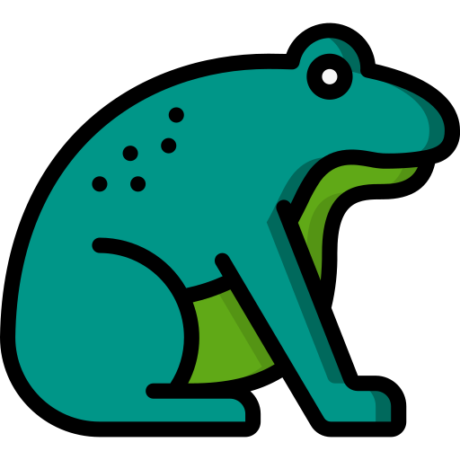

Manual de contenção Física
Guia ilustrado e vídeos demonstrativos que ensinam, de forma prática, como realizar a contenção segura de animais silvestres e exóticos mantidos como pets.


-

Anfíbios -
Peixes
-
Aves
-
Mamíferos
-
Répteis
A plataforma de Técnicas de Contenção em Animais Silvestres e Exóticos é um espaço online que reúne conteúdos educativos voltados ao ensino de métodos seguros de contenção física utilizados na rotina médico-veterinária. Por meio de um guia ilustrado e vídeos demonstrativos, o projeto apresenta diferentes formas de manejo, destacando os cuidados necessários e os possíveis riscos envolvidos.
A plataforma permite que estudantes e profissionais acompanhem os procedimentos com clareza, observando os detalhes das técnicas e revisando o conteúdo sempre que necessário. Dessa forma, o aprendizado se torna mais acessível, prático e confortável, contribuindo para o desenvolvimento das habilidades de manejo e promovendo maior segurança para os profissionais e bem-estar para os animais.